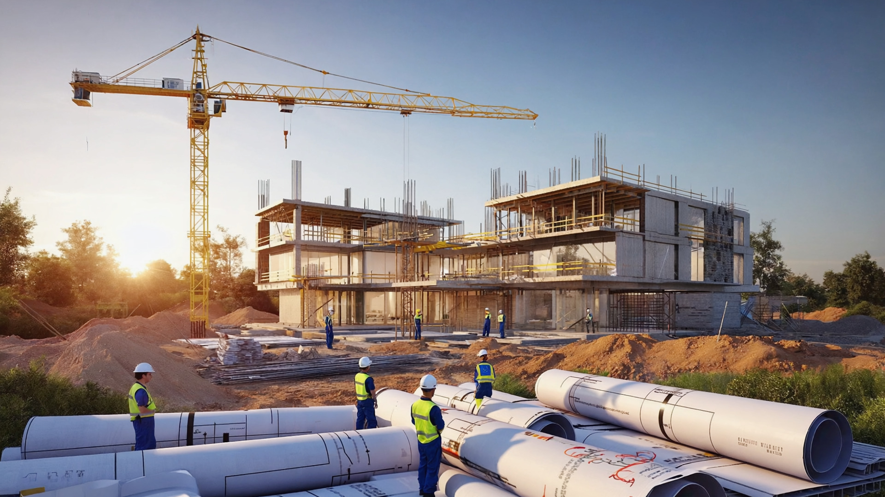

La branche BTP Korhogo de Yiri Services réalise des travaux de construction neuve, rénovation et aménagement pour les particuliers, entreprises, ONG et institutions. Nous intervenons sur les maisons, bureaux, boutiques, bâtiments scolaires, clôtures, châteaux d'eau, petites infrastructures et projets communautaires.
Maçonnerie, charpente, toiture pour maisons, bureaux et bâtiments scolaires.
Rénovation intérieure et extérieure de bâtiments existants.
Carrelage, peinture, plafond, menuiserie pour des finitions soignées.
Aménagement de bureaux et de commerces, optimisation des espaces.
Petits ouvrages de génie civil, clôtures, dallages et infrastructures.
Nous travaillons avec des matériaux adaptés au climat de Korhogo et aux normes en vigueur en Côte d'Ivoire. Nous disposons d'outillage pour le suivi des chantiers et collaborons avec des partenaires pour la fourniture de ciment, fer à béton, sable, gravier, etc. Notre priorité est la solidité et la durabilité des ouvrages réalisés.
Yiri Services intervient en priorité à Korhogo (Nouveau Quartier et autres quartiers) ainsi que dans les villages et localités environnantes de la région du Poro et des zones voisines du Nord de la Côte d'Ivoire.

Pour vos projets de BTP Korhogo, construction ou rénovation, demandez un devis détaillé au +225 07 09 43 62 74 ou écrivez à direction@yiriservices-ci.com.
Demander un Devis